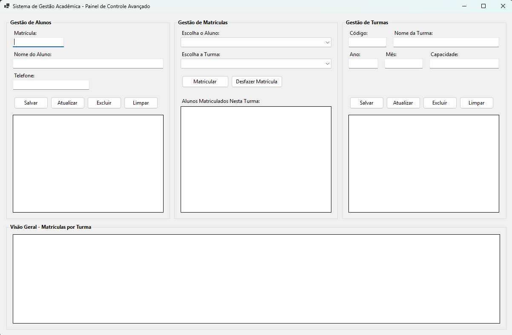

Aula 17
CRUD com BDEscola
Objetivo: construir um sistema Windows Forms para cadastrar alunos, turmas e matrículas usando SQL Server e C#.
1. Resultado esperado
Ao concluir esta aula, você terá um sistema chamado BDEscola com três áreas: cadastro de alunos, cadastro de turmas e controle de matrículas.
CRUD: significa criar, consultar, atualizar e excluir dados. Nesta atividade, você aplicará as quatro operações em alunos e turmas.
- Passo 1: crie o banco de dados no SQL Server Express.
- Passo 2: crie o projeto Windows Forms e instale o pacote de conexão.
- Passo 3: crie as classes e os repositórios.
- Passo 4: monte a tela no Designer.
- Passo 5: programe os eventos, teste cada operação e confira o resultado.
2. Pré-requisitos
- Visual Studio: instalado com a carga de trabalho Desenvolvimento para desktop com .NET.
- SQL Server Express: instalado e em execução.
- SSMS: SQL Server Management Studio instalado para executar os scripts SQL.
- Conhecimento anterior: classes, propriedades, métodos, eventos de botões e conexão com banco de dados.
Observação: os dados e a senha usados nesta aula são somente para ambiente local de aprendizagem. Não use essa senha em um sistema real.
3. Tela que você irá construir
Use esta imagem como referência durante a montagem da interface. A parte superior tem três colunas. A parte inferior mostra a visão geral das matrículas.

- Passo 1: compare os títulos e os controles da imagem com os nomes indicados na seção 9.
- Passo 2: mantenha a mesma ordem visual. Não é necessário copiar tamanhos exatos.
4. Criar e preencher o banco de dados
4.1 Abrir o SSMS
- Passo A: abra o SQL Server Management Studio.
- Passo B: conecte-se ao servidor
.\SQLEXPRESS. Use a autenticação que funciona no seu computador. - Passo C: clique em New Query.
4.2 Executar o script
- Passo A: copie todo o script abaixo.
- Passo B: cole o script em uma única janela de consulta.
- Passo C: pressione F5 ou clique em Execute.
- Passo D: atualize a lista de bancos e confirme a existência de BDEscola.
USE master;
GO
IF DB_ID('BDEscola') IS NULL
BEGIN
CREATE DATABASE BDEscola;
END;
GO
USE BDEscola;
GO
CREATE TABLE tbAluno
(
MatriculaAluno INT NOT NULL,
NomeAluno VARCHAR(100) NOT NULL,
TelefoneAluno VARCHAR(20) NOT NULL,
CONSTRAINT PK_tbAluno PRIMARY KEY (MatriculaAluno)
);
CREATE TABLE tbTurma
(
CodigoTurma VARCHAR(20) NOT NULL,
NomeTurma VARCHAR(100) NOT NULL,
AnoTurma INT NOT NULL,
MesTurma INT NOT NULL,
CapacidadeMaximaAluno INT NOT NULL,
CONSTRAINT PK_tbTurma PRIMARY KEY (CodigoTurma),
CONSTRAINT CK_tbTurma_Ano CHECK (AnoTurma >= 2000),
CONSTRAINT CK_tbTurma_Mes CHECK (MesTurma BETWEEN 1 AND 12),
CONSTRAINT CK_tbTurma_Capacidade CHECK (CapacidadeMaximaAluno > 0)
);
CREATE TABLE tbAlunoTurma
(
MatriculaAluno INT NOT NULL,
CodigoTurma VARCHAR(20) NOT NULL,
CONSTRAINT PK_tbAlunoTurma PRIMARY KEY (MatriculaAluno, CodigoTurma),
CONSTRAINT FK_tbAlunoTurma_Aluno
FOREIGN KEY (MatriculaAluno) REFERENCES tbAluno(MatriculaAluno),
CONSTRAINT FK_tbAlunoTurma_Turma
FOREIGN KEY (CodigoTurma) REFERENCES tbTurma(CodigoTurma)
);
INSERT INTO tbAluno (MatriculaAluno, NomeAluno, TelefoneAluno) VALUES
(1001, 'Ana Souza', '1199000-1001'),
(1002, 'Bruno Lima', '1199000-1002'),
(1003, 'Carla Mendes', '1199000-1003'),
(1004, 'Diego Alves', '1199000-1004'),
(1005, 'Elisa Rocha', '1199000-1005'),
(1006, 'Felipe Costa', '1199000-1006'),
(1007, 'Gabriela Martins', '1199000-1007'),
(1008, 'Henrique Dias', '1199000-1008'),
(1009, 'Isabela Silva', '1199000-1009'),
(1010, 'Joao Pereira', '1199000-1010'),
(1011, 'Karina Oliveira', '1199000-1011'),
(1012, 'Lucas Santos', '1199000-1012'),
(1013, 'Mariana Freitas', '1199000-1013'),
(1014, 'Nicolas Ramos', '1199000-1014'),
(1015, 'Olivia Barros', '1199000-1015'),
(1016, 'Paulo Araujo', '1199000-1016'),
(1017, 'Quezia Nunes', '1199000-1017'),
(1018, 'Rafael Melo', '1199000-1018'),
(1019, 'Sofia Cardoso', '1199000-1019'),
(1020, 'Tiago Vieira', '1199000-1020');
INSERT INTO tbTurma
(CodigoTurma, NomeTurma, AnoTurma, MesTurma, CapacidadeMaximaAluno)
VALUES
('CSP-01', 'C# Basico', 2026, 2, 15),
('SQL-02', 'SQL Server', 2026, 3, 10),
('WIN-03', 'Windows Forms', 2026, 4, 20);
INSERT INTO tbAlunoTurma (MatriculaAluno, CodigoTurma) VALUES
(1001, 'CSP-01'), (1002, 'CSP-01'), (1003, 'CSP-01'), (1004, 'CSP-01'),
(1005, 'SQL-02'), (1006, 'SQL-02'), (1007, 'SQL-02'), (1008, 'SQL-02'),
(1009, 'WIN-03'), (1010, 'WIN-03'), (1011, 'WIN-03'), (1012, 'WIN-03');
GO
IF NOT EXISTS (SELECT 1 FROM sys.server_principals WHERE name = 'operadorEscola')
BEGIN
CREATE LOGIN operadorEscola WITH PASSWORD = 'Escola123';
END;
GO
USE BDEscola;
GO
IF NOT EXISTS (SELECT 1 FROM sys.database_principals WHERE name = 'operadorEscola')
BEGIN
CREATE USER operadorEscola FOR LOGIN operadorEscola;
END;
GO
ALTER ROLE db_owner ADD MEMBER operadorEscola;
GO4.3 Conferir os dados
Execute estas consultas separadamente. Cada uma deve retornar dados.
USE BDEscola;
SELECT * FROM tbAluno;
SELECT * FROM tbTurma;
SELECT * FROM tbAlunoTurma;Relação N:N: tbAlunoTurma liga alunos e turmas. A chave primária composta impede uma matrícula repetida do mesmo aluno na mesma turma.
5. Criar o projeto Windows Forms
- Passo A: abra o Visual Studio.
- Passo B: clique em Criar um novo projeto.
- Passo C: escolha Aplicativo Windows Forms.
- Passo D: escolha uma versão atual do .NET.
- Passo E: use BDEscola como nome do projeto e clique em Criar.
- Passo F: confirme o namespace exibido nas propriedades do projeto. Nos blocos desta aula, ele é
BDEscola.
5.1 Instalar o pacote de conexão
- Passo A: no Solution Explorer, clique com o botão direito no projeto BDEscola.
- Passo B: escolha Gerenciar Pacotes NuGet.
- Passo C: pesquise por
Microsoft.Data.SqlClient. - Passo D: instale o pacote oficial chamado Microsoft.Data.SqlClient.
- Passo E: aceite os termos, se o Visual Studio solicitar.
Microsoft.Data.SqlClient. Não use System.Data.SqlClient.6. Criar as classes de modelo
Crie uma pasta chamada Models. Para criar cada arquivo, clique com o botão direito na pasta, escolha Adicionar, Classe, informe o nome e clique em Adicionar.
6.1 Arquivo Aluno.cs
- Passo A: crie
Models/Aluno.cs. - Passo B: substitua o conteúdo pelo código abaixo.
- Passo C: salve o arquivo com Ctrl + S.
namespace BDEscola.Models;
public class Aluno
{
public int MatriculaAluno { get; set; }
public string NomeAluno { get; set; } = string.Empty;
public string TelefoneAluno { get; set; } = string.Empty;
public bool ValidarNome()
{
return !string.IsNullOrWhiteSpace(NomeAluno) && NomeAluno.Trim().Length > 3;
}
public override string ToString()
{
return $"{MatriculaAluno} - {NomeAluno}";
}
}6.2 Arquivo Turma.cs
- Passo A: crie
Models/Turma.cs. - Passo B: substitua o conteúdo pelo código abaixo.
- Passo C: salve o arquivo.
namespace BDEscola.Models;
public class Turma
{
public string CodigoTurma { get; set; } = string.Empty;
public string NomeTurma { get; set; } = string.Empty;
public int AnoTurma { get; set; }
public int MesTurma { get; set; }
public int CapacidadeMaximaAluno { get; set; }
public int CalcularVagasRestantes(int totalMatriculados)
{
return CapacidadeMaximaAluno - totalMatriculados;
}
public bool ValidarCapacidade()
{
return CapacidadeMaximaAluno > 0;
}
public override string ToString()
{
return $"{CodigoTurma} - {NomeTurma}";
}
}Teste mental: para uma turma com capacidade 15 e 4 matrículas, CalcularVagasRestantes(4) retorna 11.
7. Criar a conexão e os repositórios
Crie uma pasta chamada Data. Os repositórios concentram os comandos SQL. O formulário chama seus métodos e não escreve SQL diretamente.
7.1 Arquivo Database.cs
- Passo A: crie
Data/Database.cs. - Passo B: confirme se a instância SQL Server é
.\SQLEXPRESS. Se for diferente, altere apenas o valor deServer. - Passo C: cole e salve o código.
using Microsoft.Data.SqlClient;
namespace BDEscola.Data;
public static class Database
{
private const string ConnectionString =
"Server=.\\SQLEXPRESS;Database=BDEscola;User Id=operadorEscola;Password=Escola123;Encrypt=True;TrustServerCertificate=True;";
public static SqlConnection CriarConexao()
{
return new SqlConnection(ConnectionString);
}
}7.2 Arquivo AlunoRepository.cs
- Passo A: crie
Data/AlunoRepository.cs. - Passo B: cole o código completo.
- Passo C: compile o projeto com Ctrl + Shift + B.
using BDEscola.Models;
using Microsoft.Data.SqlClient;
namespace BDEscola.Data;
public class AlunoRepository
{
public void Inserir(Aluno aluno)
{
const string sql = """
INSERT INTO tbAluno (MatriculaAluno, NomeAluno, TelefoneAluno)
VALUES (@MatriculaAluno, @NomeAluno, @TelefoneAluno);
""";
using SqlConnection conexao = Database.CriarConexao();
using SqlCommand comando = new(sql, conexao);
comando.Parameters.AddWithValue("@MatriculaAluno", aluno.MatriculaAluno);
comando.Parameters.AddWithValue("@NomeAluno", aluno.NomeAluno);
comando.Parameters.AddWithValue("@TelefoneAluno", aluno.TelefoneAluno);
conexao.Open();
comando.ExecuteNonQuery();
}
public List<Aluno> Listar()
{
const string sql = """
SELECT MatriculaAluno, NomeAluno, TelefoneAluno
FROM tbAluno
ORDER BY NomeAluno;
""";
List<Aluno> alunos = [];
using SqlConnection conexao = Database.CriarConexao();
using SqlCommand comando = new(sql, conexao);
conexao.Open();
using SqlDataReader leitor = comando.ExecuteReader();
while (leitor.Read())
{
alunos.Add(new Aluno
{
MatriculaAluno = leitor.GetInt32(0),
NomeAluno = leitor.GetString(1),
TelefoneAluno = leitor.GetString(2)
});
}
return alunos;
}
public void Atualizar(Aluno aluno)
{
const string sql = """
UPDATE tbAluno
SET NomeAluno = @NomeAluno,
TelefoneAluno = @TelefoneAluno
WHERE MatriculaAluno = @MatriculaAluno;
""";
using SqlConnection conexao = Database.CriarConexao();
using SqlCommand comando = new(sql, conexao);
comando.Parameters.AddWithValue("@MatriculaAluno", aluno.MatriculaAluno);
comando.Parameters.AddWithValue("@NomeAluno", aluno.NomeAluno);
comando.Parameters.AddWithValue("@TelefoneAluno", aluno.TelefoneAluno);
conexao.Open();
comando.ExecuteNonQuery();
}
public void Excluir(int matriculaAluno)
{
const string sql = "DELETE FROM tbAluno WHERE MatriculaAluno = @MatriculaAluno;";
using SqlConnection conexao = Database.CriarConexao();
using SqlCommand comando = new(sql, conexao);
comando.Parameters.AddWithValue("@MatriculaAluno", matriculaAluno);
conexao.Open();
comando.ExecuteNonQuery();
}
}7.3 Arquivo TurmaRepository.cs
- Passo A: crie
Data/TurmaRepository.cs. - Passo B: cole o código completo.
- Passo C: compile novamente. Não avance se houver erro.
using System.Data;
using BDEscola.Models;
using Microsoft.Data.SqlClient;
namespace BDEscola.Data;
public class TurmaRepository
{
public void Inserir(Turma turma)
{
const string sql = """
INSERT INTO tbTurma
(CodigoTurma, NomeTurma, AnoTurma, MesTurma, CapacidadeMaximaAluno)
VALUES
(@CodigoTurma, @NomeTurma, @AnoTurma, @MesTurma, @CapacidadeMaximaAluno);
""";
ExecutarComandoTurma(sql, turma);
}
public List<Turma> Listar()
{
const string sql = """
SELECT CodigoTurma, NomeTurma, AnoTurma, MesTurma, CapacidadeMaximaAluno
FROM tbTurma
ORDER BY CodigoTurma;
""";
List<Turma> turmas = [];
using SqlConnection conexao = Database.CriarConexao();
using SqlCommand comando = new(sql, conexao);
conexao.Open();
using SqlDataReader leitor = comando.ExecuteReader();
while (leitor.Read())
{
turmas.Add(CriarTurma(leitor));
}
return turmas;
}
public void Atualizar(Turma turma)
{
const string sql = """
UPDATE tbTurma
SET NomeTurma = @NomeTurma,
AnoTurma = @AnoTurma,
MesTurma = @MesTurma,
CapacidadeMaximaAluno = @CapacidadeMaximaAluno
WHERE CodigoTurma = @CodigoTurma;
""";
ExecutarComandoTurma(sql, turma);
}
public void Excluir(string codigoTurma)
{
const string sql = "DELETE FROM tbTurma WHERE CodigoTurma = @CodigoTurma;";
using SqlConnection conexao = Database.CriarConexao();
using SqlCommand comando = new(sql, conexao);
comando.Parameters.AddWithValue("@CodigoTurma", codigoTurma);
conexao.Open();
comando.ExecuteNonQuery();
}
public void MatricularAluno(int matricula, string codigoTurma)
{
const string sql = """
INSERT INTO tbAlunoTurma (MatriculaAluno, CodigoTurma)
VALUES (@MatriculaAluno, @CodigoTurma);
""";
using SqlConnection conexao = Database.CriarConexao();
using SqlCommand comando = new(sql, conexao);
comando.Parameters.AddWithValue("@MatriculaAluno", matricula);
comando.Parameters.AddWithValue("@CodigoTurma", codigoTurma);
conexao.Open();
comando.ExecuteNonQuery();
}
public void DesfazerMatricula(int matricula, string codigoTurma)
{
const string sql = """
DELETE FROM tbAlunoTurma
WHERE MatriculaAluno = @MatriculaAluno
AND CodigoTurma = @CodigoTurma;
""";
using SqlConnection conexao = Database.CriarConexao();
using SqlCommand comando = new(sql, conexao);
comando.Parameters.AddWithValue("@MatriculaAluno", matricula);
comando.Parameters.AddWithValue("@CodigoTurma", codigoTurma);
conexao.Open();
comando.ExecuteNonQuery();
}
public int ObterQuantidadeMatriculados(string codigoTurma)
{
const string sql = """
SELECT COUNT(*)
FROM tbAlunoTurma
WHERE CodigoTurma = @CodigoTurma;
""";
using SqlConnection conexao = Database.CriarConexao();
using SqlCommand comando = new(sql, conexao);
comando.Parameters.AddWithValue("@CodigoTurma", codigoTurma);
conexao.Open();
return Convert.ToInt32(comando.ExecuteScalar());
}
public bool ExisteMatricula(int matricula, string codigoTurma)
{
const string sql = """
SELECT COUNT(*)
FROM tbAlunoTurma
WHERE MatriculaAluno = @MatriculaAluno
AND CodigoTurma = @CodigoTurma;
""";
using SqlConnection conexao = Database.CriarConexao();
using SqlCommand comando = new(sql, conexao);
comando.Parameters.AddWithValue("@MatriculaAluno", matricula);
comando.Parameters.AddWithValue("@CodigoTurma", codigoTurma);
conexao.Open();
return Convert.ToInt32(comando.ExecuteScalar()) > 0;
}
public DataTable ListarAlunosPorTurma(string codigoTurma)
{
const string sql = """
SELECT a.MatriculaAluno, a.NomeAluno, a.TelefoneAluno
FROM tbAlunoTurma AS at
INNER JOIN tbAluno AS a ON a.MatriculaAluno = at.MatriculaAluno
WHERE at.CodigoTurma = @CodigoTurma
ORDER BY a.NomeAluno;
""";
return ConsultarTabela(sql, ("@CodigoTurma", codigoTurma));
}
public DataTable ListarVisaoGeral()
{
const string sql = """
SELECT t.CodigoTurma, t.NomeTurma, t.CapacidadeMaximaAluno,
COUNT(at.MatriculaAluno) AS TotalMatriculados,
t.CapacidadeMaximaAluno - COUNT(at.MatriculaAluno) AS VagasRestantes
FROM tbTurma AS t
LEFT JOIN tbAlunoTurma AS at ON at.CodigoTurma = t.CodigoTurma
GROUP BY t.CodigoTurma, t.NomeTurma, t.CapacidadeMaximaAluno
ORDER BY t.CodigoTurma;
""";
return ConsultarTabela(sql);
}
private static void ExecutarComandoTurma(string sql, Turma turma)
{
using SqlConnection conexao = Database.CriarConexao();
using SqlCommand comando = new(sql, conexao);
comando.Parameters.AddWithValue("@CodigoTurma", turma.CodigoTurma);
comando.Parameters.AddWithValue("@NomeTurma", turma.NomeTurma);
comando.Parameters.AddWithValue("@AnoTurma", turma.AnoTurma);
comando.Parameters.AddWithValue("@MesTurma", turma.MesTurma);
comando.Parameters.AddWithValue("@CapacidadeMaximaAluno", turma.CapacidadeMaximaAluno);
conexao.Open();
comando.ExecuteNonQuery();
}
private static DataTable ConsultarTabela(string sql, params (string Nome, object Valor)[] parametros)
{
DataTable tabela = new();
using SqlConnection conexao = Database.CriarConexao();
using SqlCommand comando = new(sql, conexao);
foreach ((string nome, object valor) in parametros)
{
comando.Parameters.AddWithValue(nome, valor);
}
using SqlDataAdapter adaptador = new(comando);
adaptador.Fill(tabela);
return tabela;
}
private static Turma CriarTurma(SqlDataReader leitor)
{
return new Turma
{
CodigoTurma = leitor.GetString(0),
NomeTurma = leitor.GetString(1),
AnoTurma = leitor.GetInt32(2),
MesTurma = leitor.GetInt32(3),
CapacidadeMaximaAluno = leitor.GetInt32(4)
};
}
}Por que há parâmetros? Os parâmetros, como @NomeAluno, enviam os valores separadamente do comando SQL e evitam a concatenação de texto insegura.
8. Montar a tela no Designer
Abra Form1.cs [Design]. Defina o texto do formulário como Sistema de Gestão Acadêmica - Painel de Controle Avançado. Aumente o tamanho da janela para que as três áreas superiores fiquem lado a lado.
8.1 Criar os contêineres
- Passo A: adicione três controles GroupBox na parte superior.
- Passo B: defina os textos como Gestão de Alunos, Gestão de Matrículas e Gestão de Turmas.
- Passo C: adicione um quarto GroupBox abaixo, ocupando toda a largura, com o texto Visão Geral - Matrículas por Turma.
8.2 Controles da Gestão de Alunos
| Tipo | Name | Texto visível |
|---|---|---|
| TextBox | txtMatriculaAluno | Sem texto |
| TextBox | txtNomeAluno | Sem texto |
| TextBox | txtTelefoneAluno | Sem texto |
| Button | btnSalvarAluno | Salvar |
| Button | btnAtualizarAluno | Atualizar |
| Button | btnExcluirAluno | Excluir |
| Button | btnLimparAluno | Limpar |
| DataGridView | dgvAlunos | Sem texto |
8.3 Controles da Gestão de Matrículas
| Tipo | Name | Texto visível |
|---|---|---|
| ComboBox | cboSelecionarAluno | Sem texto |
| ComboBox | cboSelecionarTurma | Sem texto |
| Button | btnMatricular | Matricular |
| Button | btnDesfazerMatricula | Desfazer Matrícula |
| DataGridView | dgvAlunosNaTurma | Sem texto |
8.4 Controles da Gestão de Turmas e visão geral
| Tipo | Name | Texto visível |
|---|---|---|
| TextBox | txtCodigoTurma | Sem texto |
| TextBox | txtNomeTurma | Sem texto |
| TextBox | txtAnoTurma | Sem texto |
| TextBox | txtMesTurma | Sem texto |
| TextBox | txtCapacidade | Sem texto |
| Button | btnSalvarTurma | Salvar |
| Button | btnAtualizarTurma | Atualizar |
| Button | btnExcluirTurma | Excluir |
| Button | btnLimparTurma | Limpar |
| DataGridView | dgvTurmas | Sem texto |
| DataGridView | dgvVisaoGeral | Sem texto |
8.5 Configurações obrigatórias
- Passo A: selecione cada DataGridView e defina
ReadOnlycomoTrue. - Passo B: defina
SelectionModecomoFullRowSelect. - Passo C: defina
MultiSelectcomoFalse. - Passo D: nos dois ComboBoxes, defina
DropDownStylecomoDropDownList.
9. Programar o formulário
Abra Form1.cs. Mantenha o arquivo Form1.Designer.cs gerado pelo Visual Studio. Substitua somente o conteúdo de Form1.cs pelo código abaixo.
using BDEscola.Data;
using BDEscola.Models;
using Microsoft.Data.SqlClient;
namespace BDEscola;
public partial class Form1 : Form
{
private readonly AlunoRepository alunoRepository = new();
private readonly TurmaRepository turmaRepository = new();
public Form1()
{
InitializeComponent();
}
private void Form1_Load(object sender, EventArgs e)
{
ConfigurarGrades();
CarregarTudo();
}
private void ConfigurarGrades()
{
foreach (DataGridView grade in new[] { dgvAlunos, dgvTurmas, dgvAlunosNaTurma, dgvVisaoGeral })
{
grade.AutoSizeColumnsMode = DataGridViewAutoSizeColumnsMode.Fill;
grade.ReadOnly = true;
grade.SelectionMode = DataGridViewSelectionMode.FullRowSelect;
grade.MultiSelect = false;
}
}
private void CarregarTudo()
{
CarregarAlunos();
CarregarTurmas();
CarregarCombos();
CarregarVisaoGeral();
AtualizarAlunosNaTurma();
}
private void CarregarAlunos()
{
dgvAlunos.DataSource = alunoRepository.Listar();
}
private void CarregarTurmas()
{
dgvTurmas.DataSource = turmaRepository.Listar();
}
private void CarregarCombos()
{
List<Aluno> alunos = alunoRepository.Listar();
cboSelecionarAluno.DataSource = alunos;
cboSelecionarAluno.DisplayMember = nameof(Aluno.NomeAluno);
cboSelecionarAluno.ValueMember = nameof(Aluno.MatriculaAluno);
List<Turma> turmas = turmaRepository.Listar();
cboSelecionarTurma.DataSource = turmas;
cboSelecionarTurma.DisplayMember = nameof(Turma.NomeTurma);
cboSelecionarTurma.ValueMember = nameof(Turma.CodigoTurma);
}
private void CarregarVisaoGeral()
{
dgvVisaoGeral.DataSource = turmaRepository.ListarVisaoGeral();
}
private void AtualizarAlunosNaTurma()
{
if (cboSelecionarTurma.SelectedValue is string codigoTurma)
{
dgvAlunosNaTurma.DataSource = turmaRepository.ListarAlunosPorTurma(codigoTurma);
}
else
{
dgvAlunosNaTurma.DataSource = null;
}
}
private bool TentarLerAluno(out Aluno aluno)
{
aluno = new Aluno
{
NomeAluno = txtNomeAluno.Text.Trim(),
TelefoneAluno = txtTelefoneAluno.Text.Trim()
};
if (!int.TryParse(txtMatriculaAluno.Text, out int matricula))
{
MessageBox.Show("Informe uma matrícula numérica.", "Dados inválidos");
return false;
}
aluno.MatriculaAluno = matricula;
if (!aluno.ValidarNome())
{
MessageBox.Show("O nome deve ter mais de 3 caracteres.", "Dados inválidos");
return false;
}
if (string.IsNullOrWhiteSpace(aluno.TelefoneAluno))
{
MessageBox.Show("Informe o telefone.", "Dados inválidos");
return false;
}
return true;
}
private bool TentarLerTurma(out Turma turma)
{
turma = new Turma
{
CodigoTurma = txtCodigoTurma.Text.Trim(),
NomeTurma = txtNomeTurma.Text.Trim()
};
int ano = 0;
int mes = 0;
int capacidade = 0;
bool dadosNumericosValidos =
int.TryParse(txtAnoTurma.Text, out ano) &&
int.TryParse(txtMesTurma.Text, out mes) &&
int.TryParse(txtCapacidade.Text, out capacidade);
if (string.IsNullOrWhiteSpace(turma.CodigoTurma) ||
string.IsNullOrWhiteSpace(turma.NomeTurma) ||
!dadosNumericosValidos)
{
MessageBox.Show("Preencha código, nome, ano, mês e capacidade corretamente.", "Dados inválidos");
return false;
}
turma.AnoTurma = ano;
turma.MesTurma = mes;
turma.CapacidadeMaximaAluno = capacidade;
if (turma.MesTurma is < 1 or > 12)
{
MessageBox.Show("O mês deve estar entre 1 e 12.", "Dados inválidos");
return false;
}
if (!turma.ValidarCapacidade())
{
MessageBox.Show("A capacidade deve ser maior que zero.", "Dados inválidos");
return false;
}
return true;
}
private void btnSalvarAluno_Click(object sender, EventArgs e)
{
if (!TentarLerAluno(out Aluno aluno))
{
return;
}
try
{
alunoRepository.Inserir(aluno);
LimparAluno();
CarregarTudo();
MessageBox.Show("Aluno cadastrado com sucesso.", "BDEscola");
}
catch (SqlException ex)
{
MessageBox.Show($"Não foi possível cadastrar o aluno. {ex.Message}", "Erro no banco");
}
}
private void btnAtualizarAluno_Click(object sender, EventArgs e)
{
if (!TentarLerAluno(out Aluno aluno))
{
return;
}
alunoRepository.Atualizar(aluno);
LimparAluno();
CarregarTudo();
MessageBox.Show("Aluno atualizado com sucesso.", "BDEscola");
}
private void btnExcluirAluno_Click(object sender, EventArgs e)
{
if (!int.TryParse(txtMatriculaAluno.Text, out int matricula))
{
MessageBox.Show("Selecione ou informe uma matrícula válida.", "Dados inválidos");
return;
}
if (MessageBox.Show("Deseja excluir este aluno?", "Confirmar exclusão",
MessageBoxButtons.YesNo, MessageBoxIcon.Warning) != DialogResult.Yes)
{
return;
}
try
{
alunoRepository.Excluir(matricula);
LimparAluno();
CarregarTudo();
MessageBox.Show("Aluno excluído com sucesso.", "BDEscola");
}
catch (SqlException ex)
{
MessageBox.Show($"Não foi possível excluir o aluno. Remova suas matrículas antes. {ex.Message}", "Erro no banco");
}
}
private void btnLimparAluno_Click(object sender, EventArgs e)
{
LimparAluno();
}
private void dgvAlunos_CellClick(object sender, DataGridViewCellEventArgs e)
{
if (e.RowIndex < 0)
{
return;
}
DataGridViewRow linha = dgvAlunos.Rows[e.RowIndex];
txtMatriculaAluno.Text = linha.Cells[nameof(Aluno.MatriculaAluno)].Value?.ToString();
txtNomeAluno.Text = linha.Cells[nameof(Aluno.NomeAluno)].Value?.ToString();
txtTelefoneAluno.Text = linha.Cells[nameof(Aluno.TelefoneAluno)].Value?.ToString();
}
private void btnSalvarTurma_Click(object sender, EventArgs e)
{
if (!TentarLerTurma(out Turma turma))
{
return;
}
try
{
turmaRepository.Inserir(turma);
LimparTurma();
CarregarTudo();
MessageBox.Show("Turma cadastrada com sucesso.", "BDEscola");
}
catch (SqlException ex)
{
MessageBox.Show($"Não foi possível cadastrar a turma. {ex.Message}", "Erro no banco");
}
}
private void btnAtualizarTurma_Click(object sender, EventArgs e)
{
if (!TentarLerTurma(out Turma turma))
{
return;
}
turmaRepository.Atualizar(turma);
LimparTurma();
CarregarTudo();
MessageBox.Show("Turma atualizada com sucesso.", "BDEscola");
}
private void btnExcluirTurma_Click(object sender, EventArgs e)
{
string codigoTurma = txtCodigoTurma.Text.Trim();
if (string.IsNullOrWhiteSpace(codigoTurma))
{
MessageBox.Show("Selecione ou informe o código da turma.", "Dados inválidos");
return;
}
if (MessageBox.Show("Deseja excluir esta turma?", "Confirmar exclusão",
MessageBoxButtons.YesNo, MessageBoxIcon.Warning) != DialogResult.Yes)
{
return;
}
try
{
turmaRepository.Excluir(codigoTurma);
LimparTurma();
CarregarTudo();
MessageBox.Show("Turma excluída com sucesso.", "BDEscola");
}
catch (SqlException ex)
{
MessageBox.Show($"Não foi possível excluir a turma. Remova suas matrículas antes. {ex.Message}", "Erro no banco");
}
}
private void btnLimparTurma_Click(object sender, EventArgs e)
{
LimparTurma();
}
private void dgvTurmas_CellClick(object sender, DataGridViewCellEventArgs e)
{
if (e.RowIndex < 0)
{
return;
}
DataGridViewRow linha = dgvTurmas.Rows[e.RowIndex];
txtCodigoTurma.Text = linha.Cells[nameof(Turma.CodigoTurma)].Value?.ToString();
txtNomeTurma.Text = linha.Cells[nameof(Turma.NomeTurma)].Value?.ToString();
txtAnoTurma.Text = linha.Cells[nameof(Turma.AnoTurma)].Value?.ToString();
txtMesTurma.Text = linha.Cells[nameof(Turma.MesTurma)].Value?.ToString();
txtCapacidade.Text = linha.Cells[nameof(Turma.CapacidadeMaximaAluno)].Value?.ToString();
}
private void cboSelecionarTurma_SelectedIndexChanged(object sender, EventArgs e)
{
AtualizarAlunosNaTurma();
}
private void btnMatricular_Click(object sender, EventArgs e)
{
if (cboSelecionarAluno.SelectedItem is not Aluno aluno ||
cboSelecionarTurma.SelectedItem is not Turma turma)
{
MessageBox.Show("Selecione um aluno e uma turma.", "Dados inválidos");
return;
}
if (turmaRepository.ExisteMatricula(aluno.MatriculaAluno, turma.CodigoTurma))
{
MessageBox.Show("Este aluno já está matriculado nesta turma.", "Matrícula");
return;
}
int totalMatriculados = turmaRepository.ObterQuantidadeMatriculados(turma.CodigoTurma);
if (turma.CalcularVagasRestantes(totalMatriculados) <= 0)
{
MessageBox.Show("A turma não possui vagas disponíveis.", "Matrícula");
return;
}
turmaRepository.MatricularAluno(aluno.MatriculaAluno, turma.CodigoTurma);
AtualizarAlunosNaTurma();
CarregarVisaoGeral();
MessageBox.Show("Matrícula realizada com sucesso.", "BDEscola");
}
private void btnDesfazerMatricula_Click(object sender, EventArgs e)
{
if (cboSelecionarTurma.SelectedItem is not Turma turma ||
dgvAlunosNaTurma.CurrentRow is null)
{
MessageBox.Show("Selecione uma turma e um aluno matriculado.", "Dados inválidos");
return;
}
object? valorMatricula = dgvAlunosNaTurma.CurrentRow.Cells[nameof(Aluno.MatriculaAluno)].Value;
if (!int.TryParse(valorMatricula?.ToString(), out int matricula))
{
MessageBox.Show("A matrícula selecionada é inválida.", "Dados inválidos");
return;
}
turmaRepository.DesfazerMatricula(matricula, turma.CodigoTurma);
AtualizarAlunosNaTurma();
CarregarVisaoGeral();
MessageBox.Show("Matrícula desfeita com sucesso.", "BDEscola");
}
private void LimparAluno()
{
txtMatriculaAluno.Clear();
txtNomeAluno.Clear();
txtTelefoneAluno.Clear();
txtMatriculaAluno.Focus();
}
private void LimparTurma()
{
txtCodigoTurma.Clear();
txtNomeTurma.Clear();
txtAnoTurma.Clear();
txtMesTurma.Clear();
txtCapacidade.Clear();
txtCodigoTurma.Focus();
}
}9.1 Associar os eventos no Designer
Selecione cada controle, abra a janela Properties, clique no ícone de raio e associe os eventos indicados.
| Controle | Evento | Método |
|---|---|---|
| Form1 | Load | Form1_Load |
btnSalvarAluno | Click | btnSalvarAluno_Click |
btnAtualizarAluno | Click | btnAtualizarAluno_Click |
btnExcluirAluno | Click | btnExcluirAluno_Click |
btnLimparAluno | Click | btnLimparAluno_Click |
dgvAlunos | CellClick | dgvAlunos_CellClick |
btnSalvarTurma | Click | btnSalvarTurma_Click |
btnAtualizarTurma | Click | btnAtualizarTurma_Click |
btnExcluirTurma | Click | btnExcluirTurma_Click |
btnLimparTurma | Click | btnLimparTurma_Click |
dgvTurmas | CellClick | dgvTurmas_CellClick |
cboSelecionarTurma | SelectedIndexChanged | cboSelecionarTurma_SelectedIndexChanged |
btnMatricular | Click | btnMatricular_Click |
btnDesfazerMatricula | Click | btnDesfazerMatricula_Click |
Importante: depois de associar os eventos, compile o projeto. Se um nome estiver diferente do nome desta aula, corrija o Name do controle no Designer.
10. Testar o sistema em ordem
- Teste 1: pressione F5. A tela deve abrir com alunos, turmas, ComboBoxes e visão geral preenchidos.
- Teste 2: cadastre um aluno com uma matrícula ainda não utilizada. Confirme se ele aparece em
dgvAlunose no ComboBox. - Teste 3: selecione o aluno na grade, altere o telefone, clique em Atualizar e confira a alteração.
- Teste 4: cadastre uma turma com capacidade 1. Confirme se ela aparece em
dgvTurmase no ComboBox. - Teste 5: matricule um aluno nessa turma. Confirme a linha em
dgvAlunosNaTurmae a atualização dedgvVisaoGeral. - Teste 6: tente matricular outro aluno na turma com capacidade 1. O sistema deve informar que não há vagas.
- Teste 7: selecione a linha da matrícula e clique em Desfazer Matrícula. A grade e a visão geral devem atualizar.
- Teste 8: tente excluir um aluno ou turma que ainda tenha matrícula. O SQL Server deve impedir a exclusão e o sistema deve mostrar uma mensagem.
11. Erros comuns
- Erro de conexão: confirme o nome da instância SQL Server em
Database.cs. O exemplo usa.\SQLEXPRESS. - Login failed: confirme que o login
operadorEscolafoi criado e que o SQL Server aceita autenticação SQL. - Controle não existe: confira o valor da propriedade
Nameno Designer. O nome deve ser idêntico ao usado no código. - Evento não executa: abra a aba de eventos do controle e associe o método correto.
- Aluno ou turma duplicado: use uma matrícula ou um código que ainda não exista.
- Não é possível excluir: desfaça as matrículas ligadas ao aluno ou à turma antes de excluir.
12. Checklist de entrega
- O banco BDEscola contém as três tabelas e os dados iniciais.
- O projeto usa o pacote Microsoft.Data.SqlClient.
- As classes
Aluno,Turma,Database,AlunoRepositoryeTurmaRepositoryexistem. - Os quatro comandos do CRUD funcionam para alunos e turmas.
- Uma matrícula não é duplicada.
- Uma turma não recebe mais alunos do que sua capacidade.
- Ao trocar a turma no ComboBox, a grade de alunos matriculados atualiza.
- A visão geral mostra a quantidade de matrículas e vagas restantes.
Conclusão: este projeto integra modelagem de dados, POO, ADO.NET, SQL parametrizado, eventos e regras de negócio em uma aplicação CRUD completa.
Última atualização: 11/11/2026